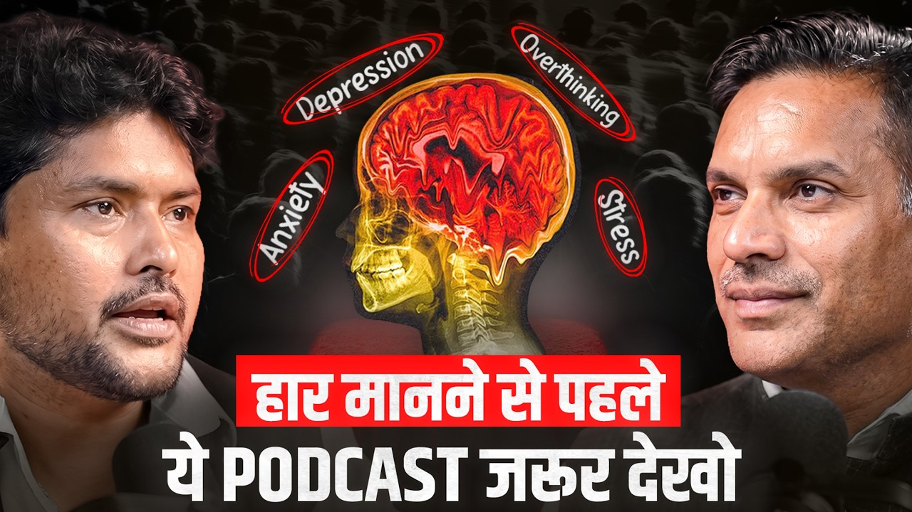

How to Build an Unbreakable Mindset When Life Doesn't Go as Planned
One Day You Are on Top. The Next, Nobody Will Hire You for ₹15,000.
That is exactly what happened to Sarvesh Mishra. He was a well known TV journalist who covered crime, politics, terror attacks, floods and the Kedarnath disaster. After he left his job, he could not find even a ₹12,000 to ₹15,000 position. He packed his remaining savings and went to Rishikesh with no plan.
Today he runs Red Hot Media House and Cure Soul Life. In a conversation with host Chitresh Soni, he explained how that fall became the foundation of everything he built, and why so many young Indians break under pressure that previous generations absorbed.
If you want a strong mindset in tough times, this breakdown covers the ideas worth keeping.
Why This Conversation Matters Right Now
Exam failure, a broken relationship, a job loss, a health scare. For many young people in India, one setback now feels like the end of the road. Sarvesh addresses this directly, and he does not blame the youth. He looks at how mindset is actually formed.
His core point is simple: mindset is not a personality trait you are born with. It is built by your environment, your family, your teachers and your daily habits.
How Mindset Is Really Built
Sarvesh says mindset develops from the setting in which we grow up: how parents and siblings treat us, who our teachers and bosses are, and what stories we hear as children.
He compares two generations.
Earlier generations believed in doing their duty and leaving the result to a higher power. If they failed an exam, they tried again. Faith, whether in God or in family, gave them something to hold.
Today's generation often feels that every result belongs to them alone. When one milestone fails, it feels like the whole world has failed.
He also points out that comfort is not the same as strength. Children today get more facilities but less time with parents, fewer stories from grandparents and far fewer outdoor games. In his words, comforts do not shape a life. Values do.
The Outdoor Games Argument
Games like gilli danda, hide and seek, kite flying and cricket built the body and the brain together. Kids made strategies, lost, laughed and tried again with friends beside them.
A video game played alone in a bedroom works differently. The rules and rewards are controlled by someone else. Sarvesh argues that the player holds the remote but is not the leader. That difference matters when real life delivers a loss.
His other point is about friends. Earlier, a friend would put a hand on your shoulder and say, "It is just a game, let us go have tea." That sentence carried a philosophy: this setback is not your whole life.
The Science Part: Amygdala vs Prefrontal Cortex (Simplified)
This is the most searchable and practical section of the episode. Sarvesh explains overthinking with a simplified brain model.
The amygdala reacts to threat, insecurity or hurt ego. It runs on emotion and pushes the body into fight or flight mode.
The prefrontal cortex handles logic, planning and perspective.
When the amygdala takes over, reasoning slows down. Then comes the cycle he describes:
- A trigger happens.
- Overthinking begins, which he calls thought rumination.
- Overthinking grows into anxiety.
- Prolonged anxiety can slide toward depression.
The Boss Call Example
Your boss says, "Let us talk this evening." A calm brain thinks, "Maybe it is a new project." An alarmed brain thinks, "Am I being fired?" By evening, you have spent hours producing stress hormones. Then the boss says he just wants to discuss a new project.
The Job Loss Example
Two people lose their jobs. One says, "I am finished, how will I pay my EMI?" The other says, "I was stuck for three years, now I can try something new." Same event, different thinking. Only one of them was thinking from the logical part of the brain.
A note for accuracy: this is a simplified explanation. Brain function is more complex, and anyone struggling with persistent anxiety or low mood should speak to a qualified mental health professional.
The Village Square Lesson: Why People Healed Together
Sarvesh shares a story about a friend's grandfather. When asked whether people had depression in earlier times, he replied: "Of course we did, but we dissolved it at the chaupal."
Youth, children and elders sat together under a tree near the tea stall. Ten people gave ten opinions. Nobody felt trapped in a single thought. The mind stayed in a safe space where it could think clearly.
His takeaway: sometimes you do not need a retreat or a therapy room. You just need time with real people who will listen.
Fact vs Story: A Method for Rescuing Relationships
One of the most practical ideas in the episode is the difference between fact and story.
Sarvesh gives an example. A friend slaps you at a gathering to stop a group from plotting against you. The fact is that he slapped you. The story you create is that he insulted you in public. Years later, you forget the fact but remember the story, and the friendship is gone.
He says he has seen the same pattern in marriages, where couples stop speaking for weeks over something nobody can name later. He claims that in the Cure Soul Life program, several couples with divorce papers already filed chose to reconcile after separating facts from stories. These are his own reported results.
Try This Today
- Write down the exact event that hurt you, in one sentence, without emotion.
- Write down the story you added to it.
- Ask yourself which of the two is actually true.
- If it is safe to do so, talk to the other person with only the fact.
What Is the Human Operating System?
Cure Soul Life uses the phrase Human Operating System. Sarvesh explains it with a phone: a great camera is useless if the processor is weak or the phone is overloaded with apps.
He says people need balance across three things: body, mind and energy. When one is off, the others suffer. A great body with a bad mood does not perform. A great mind in a tired body does not perform either.
The Seven Day Life Reset
According to Sarvesh, Life Reset runs for seven days, two hours each evening, and works through these layers:
| Day Focus | What It Covers |
|---|---|
| Brain | Awareness of thought patterns and mindset |
| Body | Physical habits, energy sources, lifestyle |
| Relationships | Facts vs stories in family and work ties |
| Wealth | Money beliefs and blocks |
| Energy | Meditation, yoga and ancient wisdom practices |
Please treat this as a description of the program as shared in the podcast, not as medical advice or a guaranteed outcome.
The 45 Second Silence Test
In a webinar with about 250 people, Sarvesh stood silent in front of the screen for 45 seconds. People checked phones, scrolled notifications or assumed a technical glitch. When he asked whether the silence made them uncomfortable, he suggested the answer reveals how little time we spend with ourselves.
Try it: Sit on a sofa for five minutes with no phone, no music and no task. Eyes open is enough. Notice how restless you feel.
Why Failure Often Comes Before the Big Break
Sarvesh urges listeners to pick any successful person and look back thirty years. Most were broken many times before they were famous.
Three ideas from this section stand out:
- Challenges shape people only if they are accepted, not resented.
- Real change often comes from a question, not an answer. Ask better questions.
- Advice only works if you take it from the right person. Going to an ENT for a heart problem will not fix your heart.
He also tells the story of the man who refused the villagers, the boat and the helicopter during a flood, then asked God why he was not saved. God replied that He had sent all three.
Why the Wellness Industry Is Growing
Sarvesh notes that wealthy people spend heavily on their bodies, relationships and inner balance because they know money cannot buy life itself. He also says a large share of retreat visitors in Rishikesh come from abroad. The wellness sector is expanding quickly worldwide, which he sees as proof that yoga, meditation and Ayurveda are not outdated ideas. Readers should check current market figures from published industry reports.
A Note for Anyone Who Is Struggling
If you or someone you know is thinking about ending their life, please reach out for support now. In India, Tele MANAS offers free, 24 hour mental health support at 14416. Speak to a trusted person or a qualified mental health professional as well. You do not have to carry this alone.
Key Takeaways
- Mindset is shaped by environment, family, teachers and daily habits, so it can be rebuilt.
- Comforts do not build strength. Values, discipline and real world challenges do.
- Overthinking can turn into anxiety. Breaking the thought loop early matters.
- Separate facts from stories before a small misunderstanding damages a relationship.
- Spend time with real people. Healing often starts with simply being heard.
- Failure is common behind every success story. How you respond decides the outcome.
- Ask better questions, and seek advice from someone qualified in that area.
Frequently Asked Questions
1. How do I build a strong mindset in tough times?
Start with environment and habits: sleep, movement, honest conversations and fewer hours alone with screens. Then practice separating facts from stories.
2. How can I stop overthinking?
Write the situation as a single factual sentence, talk to someone you trust, and spend a few minutes each day in silence without devices.
3. What is the link between overthinking and anxiety?
Repeated unresolved thoughts keep the stress response active. Over time, this can grow into anxiety.
4. Why are young people in India struggling more with stress?
Sarvesh points to less family time, less outdoor play, more screen based life, weaker support circles and a belief that one result defines everything.
5. What is Life Reset?
It is a seven day program by Cure Soul Life that covers brain, body, relationships, wealth and energy.
6. What is the Human Operating System?
It is Cure Soul Life's framework that compares a person to a device whose body, mind and energy must stay balanced.
7. Is meditation really useful for stress?
Many people use it to build awareness and calm. It works best alongside professional care when someone has clinical symptoms.
8. Who is Sarvesh Mishra?
He is a former journalist, author and founder of Red Hot Media House and Cure Soul Life.
Want to Hear the Full Conversation?
Watch the full episode to hear and Sarvesh Mishra
- About Sarvesh Mishra
- Guest Index
- Apply as Guest
- All Episodes Playlist
- What Is The Sarvesh Mishra Show
Sarvesh Mishra is an Indian entrepreneur, journalist, interviewer and the host of The Sarvesh Mishra Show. He is the Founder of Red Hot Media House Pvt. Ltd. and CureSoulLife Pvt. Ltd., and the author of Love With Benifit.
Back to the blog